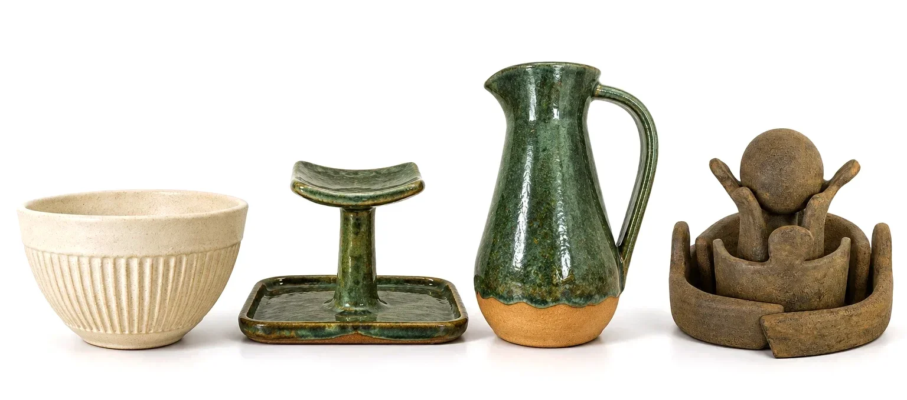
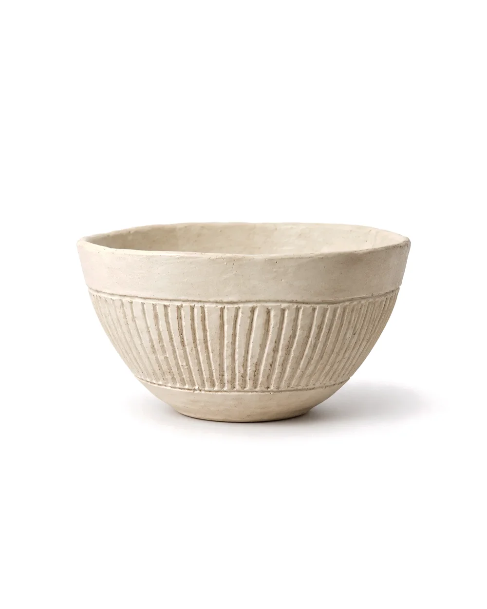
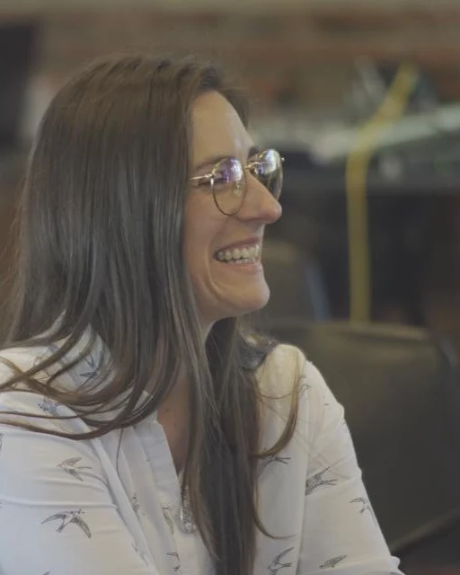
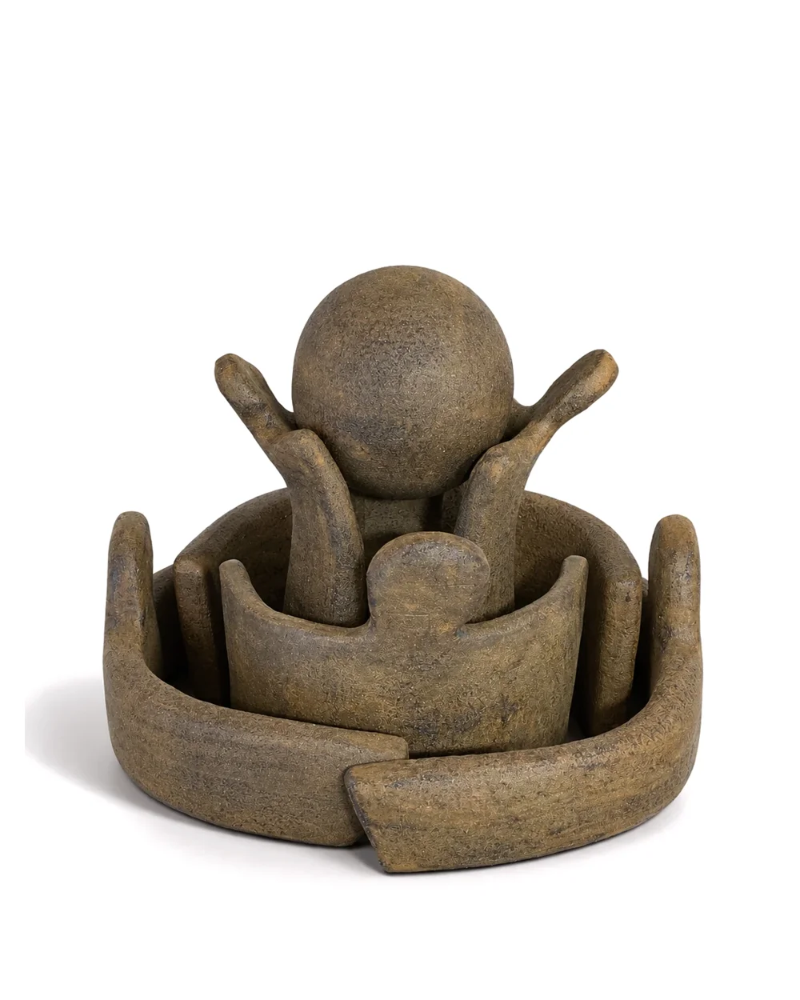
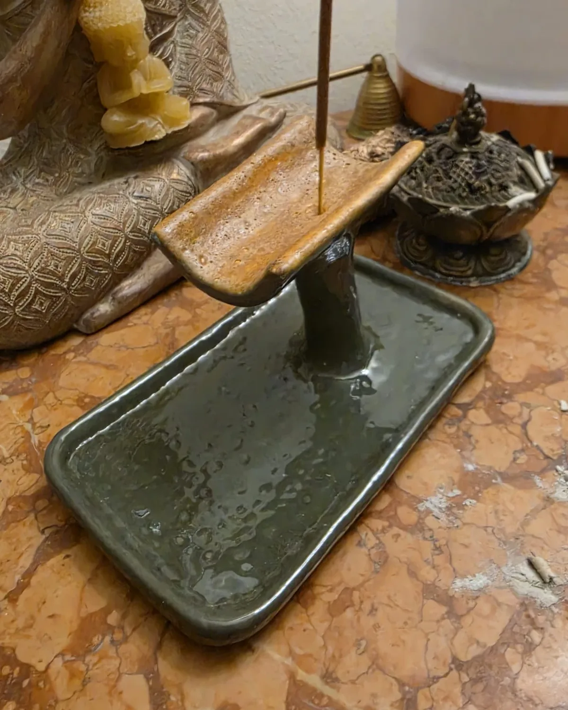

LU — Cerámica de Lucía Laviano

LU es una colección de cerámica de edición limitada inspirada en texturas naturales y sensaciones táctiles. Cada pieza es hecha a mano, única en forma y textura, y por eso no es solo un objeto de uso, sino un objeto de arte.
VER LA COLECCIÓN ↗01 — Filosofía
La forma nace del barro,
cambia con el tiempo
y adquiere carácter.

En un mundo de producción en serie, perdimos la conexión con los objetos que nos rodean. Lo que usamos todos los días dejó de tener historia, carácter e identidad.
Cada pieza de LU se modela a mano, se seca lento y pasa por el horno una o dos veces. Las marcas de los dedos, las variaciones del esmalte y las pequeñas imperfecciones no se corrigen: son la firma de cada objeto.
02 — El taller

LUCÍA
LAVIANO
Ceramista y creadora de LU. Trabaja desde su taller en Carrasco, Montevideo, donde modela cada pieza a mano, con torno o con placas, en series cortas que nunca se repiten.
Su trabajo explora la tensión entre lo funcional y lo escultórico: objetos que se pueden usar, pero que también piden ser mirados.
VER LA COLECCIÓN ↗Esta colección no es solo vajilla,
son objetos que cambian
lo cotidiano.
- Hecho a mano
- Cada pieza se modela, retoca y esmalta a mano, una por una.
- Texturas únicas
- Superficies que invitan a tocar: mates, rugosas, satinadas.
- Producción lenta
- Series cortas, sin apuro. El tiempo también es un material.
- Materiales nobles
- Arcillas y esmaltes seleccionados, aptos para uso diario.

GALERÍA
Donde la forma
encuentra el alma

Formas únicas.
Edición limitada.
Cada serie tiene entre 3 y 10 piezas. Cuando se terminan, no se vuelven a hacer iguales: la próxima vez el barro, el esmalte y el horno van a dar otro resultado.
“Lo que más me gusta es que cuando la toco me doy cuenta de que nadie más tiene una igual.”
— Cliente
SENTÍ
LA CERÁMICA.
TOCÁ
LA FORMA.
03 — Contacto
¿Querés saber más de la colección, hacer un encargo o colaborar?
Escribime y te ayudo a encontrar tu pieza.
Consultas
Redes
Instagram — próximamente
Taller
Carrasco, Montevideo
Uruguay
Visitas con cita previa